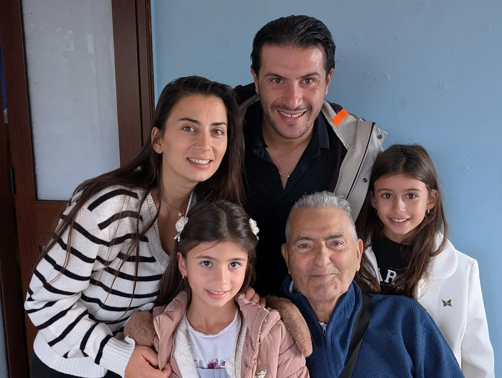
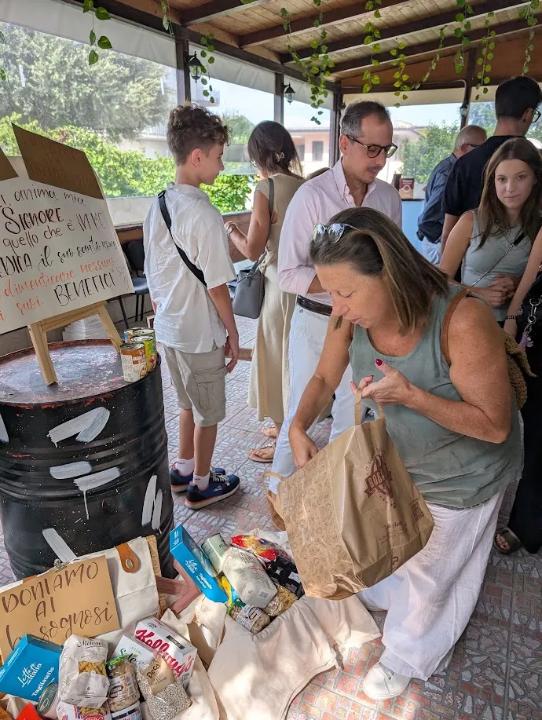

Una famiglia nel cuore di Pozzuoli.
Siamo una chiesa dove puoi conoscere Gesù, trovare amicizie vere e un posto a cui appartenere. Così come sei.
Come un fiume, l'amore di Dio porta vita ovunque passa.
Siamo persone semplici, di ogni età e storia, unite da una cosa: Gesù ha cambiato la nostra vita. E crediamo che possa farlo anche con la tua.
Scopri chi siamo
Il frutto del donare
Lettera ai Filippesi · predica 8 di 8
Chi ha capito quanto è costato il Vangelo desidera sostenerlo: un dono per l'annuncio dà gioia a chi lo riceve, porta frutto eterno a chi lo fa, sale a Dio come un profumo e trova un Dio che non resta debitore di nessuno.
Trova il tuo posto
Dalla scuola domenicale al calcetto, ci sono tanti modi per fare parte della famiglia.

Scuola domenicale
Storie della Bibbia, canti e giochi per i più piccoli.

Giovanissimi
Serate insieme, domande vere e amicizie che durano.

Giovani famiglie
Coppie e genitori che crescono nella fede.

Chiesa in casa
Bibbia, preghiera e tavola condivisa nelle case.

Donne
Incoraggiarsi, pregare e studiare la Parola insieme.
Uomini
Uomini che si sostengono nella fede e nella vita.

Calcetto
La partita della settimana, aperta a tutti.
Inglese
Incontri in inglese, per chi lo parla e chi lo impara.

Aiuto ai bisognosi
Beni di prima necessità per chi è in difficoltà.
Vite trasformate da Cristo
Nati di nuovo
La storia di Joy
Trasformati da Cristo per amare come Cristo
Scegli una storia
Stiamo costruendo un centro nel cuore di Pozzuoli
Un luogo aperto alla città: per il culto, per i ragazzi, per le famiglie e per chi ha bisogno. Mattone dopo mattone, lo vediamo prendere forma.
- Ottobre 2025 Le fondamenta
- Maggio 2026 La struttura prende forma
- Prossimamente Copertura, impianti e finiture


Trascina il cerchio giallo per vedere quanto è cresciuto in sette mesi.
Vita insieme


 © OpenStreetMap
© OpenStreetMap
Ci vediamo domenica?
Non serve conoscere nessuno, né sapere cosa dire. Vieni così come sei: ti accoglieremo con un caffè e un sorriso.
- 10:00 Caffè insieme
- 10:15 Culto per tutta la famiglia
Via Casalanno, 85 Pozzuoli (NA)
Preferisci chiamare? 375 548 0132